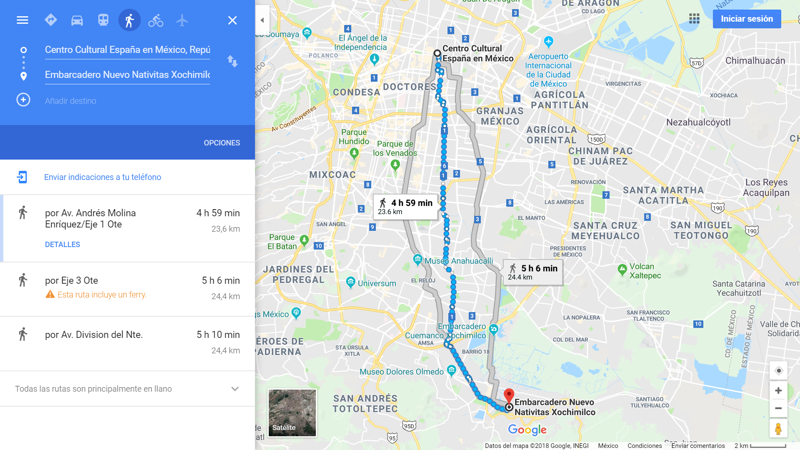
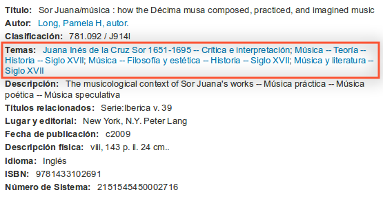

Abriendo colecciones:
la experiencia de la Biblioteca Daniel Cosío Villegas
la experiencia de la Biblioteca Daniel Cosío Villegas
Silvia Gutiérrez | @espejolento | Bibliotecaria de Humanidades Digitales
Biblioteca Daniel Cosío Villegas
medio millón de libros
25 km de estantería
Caso 1. Abrir para encontrar

25 km de estantería
Clasificación, ficheros y lenguajes controlados


Organizar ✔️, ¿y comunicar?
Clasificación Decimal Dewey


La Colección de la BDCV según su Clasificación Decimal Dewey
La colección de la Biblioteca Británica según su DDC
por Cameron Mence
Encabezamientos de materia (temas) - Biblioteca del Congreso
MARC
Caso 2. Abrir para crear comunidad

Todo lo sabemos entre todos
.
Aforismo favorito de Alfonso Reyes
Exposiciones temáticas

Proyectos digitales colaborativos
zapatavive.colmex.mx (📝 con @asantimartinez)
Reflexión conjunta.
Encuentro sobre Gestión de Datos y Resultados de Investigación
Metadatos para la gestión de datos de investigación: propuesta para su implementación. Guadalupe Vega pic.twitter.com/uWsI9f9eN2
— Biblioteca Colmex (@BiblioColmex) March 21, 2018
Caso 3. Abrir para vincular y conocer

Expertos en información
frente a la posverdad
Grupo de bibliográfos, trabajando y contrastando ideas, cifras y argumentos propuestos en el segundo debate por los candidatos a la presidencia @INEMexico @Pajaropolitico @VerificadoMX pic.twitter.com/hOLvrgnbYQ
— Biblioteca Colmex (@BiblioColmex) May 21, 2018
Vincular información en Wikipedia
- La enciclopedia libre más grande del mundo
- Dentro de las 10 páginas más vistas
- 1 millón 400,000 artículos en español
- 570 millones de visitas diarias
"Dignos del erario público", rompiendo muros académicos
Sueño cumplido:Wikipedia en clase de Graciela Márquez @colmex. Gracias @Wikimedia_mx @BiblioColmex por ser lo mejor pic.twitter.com/pA4TPDadJ3
— Silvia Gutiérrez (@espejolento) October 3, 2016
Primer Wikipedista en Residencia en Biblioteca Académica de AmLat
1Bib1Ref | 1Lib1Ref
1Bib1Ref | Talleres

1Bib1Ref | Bibliógrafxs unidxs
1Bib1Ref | Más allá de sólo referencias
Así se ven las contribuciones de lxs Bibliotecarixs @BiblioColmex en @wikidata en el taller @afermva 🗺️
— Silvia Gutiérrez (@espejolento) January 25, 2018
¡Más registros de Bibliotecas Públicas de México!📚
Qué bonito equipo 💜#1Lib1Ref (más o menos) pic.twitter.com/iz4FBpK5aG
1Bib1Ref | Puentes de colaboración
Bibliotecarias👩🏾💻 y Bibliotecarios👨🏾💻 de la Red de Bibliotecas de la @udg_oficial estaremos participando de esta iniciativa #1bib1ref como parte de la representación mexicana🇲🇽 en suma con la @BiblioColmex y las Bibliotecas de @cultura_mx y con el apoyo de @Wikimedia_mx https://t.co/UIx1VIjzRv
— USB_REBIUdeG (@USB_REBIUdeG) May 3, 2018
Editatones pasados

- 2 de Diciembre 2017 - Louis Pouzin, inventor del Internet
- 8 de Marzo 2018 - Haciendo y deshaciendo el género

Editatones por venir

- 1 de Octubre - Lucha por la Memoria: Movimientos Sociales
- 25 de Octubre - De Voz en Voz: Lenguas de México
"Compartir es el nuevo tener", materiales
bit.ly/wiki-BDCV
¡Gracias!